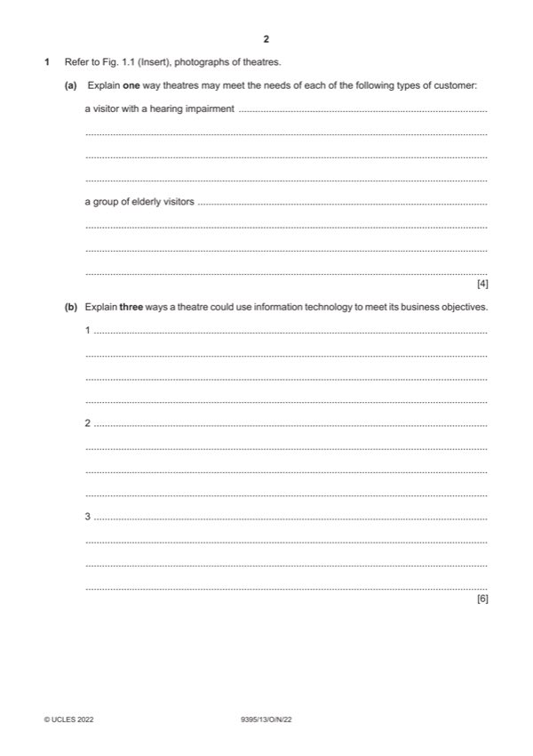

Question 1

Original paper page 2
Part 1(a) — solution
- Loop hearing system (1) so that they can hear the performance (1)
- Signposts (1) clearly seen about the theatre so that they know where
- Early performance tickets provided (1) so that they are not too tired for
- Seats near exits (1) so they can leave the theatre easily if necessary (1)
Mark points
- Loop hearing system (1) so that they can hear the performance (1)
- Signposts (1) clearly seen about the theatre so that they know where
- Early performance tickets provided (1) so that they are not too tired for
- Seats near exits (1) so they can leave the theatre easily if necessary (1)
Part 1(b) — solution
- Use email to contact potential customers (1) this may increase numbers
- Social media posts (1) which they can respond to quickly will help create
- Online tickets (1) which can be sent via email to customers for their
- Online marketing (1) is a cheaper way and saves on costs (1)
Mark points
- Use email to contact potential customers (1) this may increase numbers
- Social media posts (1) which they can respond to quickly will help create
- Online tickets (1) which can be sent via email to customers for their
- Online marketing (1) is a cheaper way and saves on costs (1)
Part 1(c) — solution
- As tickets cannot be stored and used later they need to be sold so the
- Theatres may produce videos (1) this will show clients what the
- Discounts may be offered (1) and the cheaper price may encourage
Mark points
- As tickets cannot be stored and used later they need to be sold so the
- Theatres may produce videos (1) this will show clients what the
- Discounts may be offered (1) and the cheaper price may encourage
Part 1(d) — solution
Discuss the benefits of good customer service for external customers 9
of a theatre.
Indicative content:
Needs of customers are met quickly e.g. sales staff are knowledgeable and
can answer queries about the events on at the theatre/which seats may be
best/whether food is available/how educational groups may be
accommodated plus which performances may be most suitable.
Complaints are dealt with in a satisfactory manner – gives people
confidence in the management – discounts on seats/tickets may be
provided, meet the cast situations may occur.
Plenty of ancillary products or services available e.g. refreshments/
information such as guide booklets to the theatre/performances etc.
Information and advice for people is available from reception such as how to
access seats and use of hearing loops during performances.
Good access and assistance for those people who have specific needs e.g.
language/hearing/mobility etc.
Other relevant information should also be credited.
Mark using the levels of response criteria below.
Level 3 (7–9 marks)
Candidates will show a clear understanding of the question and include a
detailed discussion of how good customer service benefits external
customers of a theatre. Candidates effectively discuss a range of reasons
and attempt to weigh up the significance of each. There is sound and
frequent evidence of thorough, detailed and accurate knowledge and
understanding of concepts and principles using appropriate terminology.
Level 2 (4–6 marks)
Candidates will show an understanding of the question and include
explanations of the ways in which good customer service benefits external
customers of a theatre. There may be some attempt to discuss and some
analytical language may be used. The answer is relevant and accurate and
shows reasonable knowledge and understanding of concepts and principles
with some use of appropriate terminology.
Level 1 (1–3 marks)
Candidates identify/describe some possible ways that good customer
service benefits external customers of a theatre. Information may be a list of
points but explanations are incomplete and arguments partial (if present).
The answer lacks coherent organisation and there is no attempt to discuss.
The answer is basic and shows limited knowledge and understanding of
concepts and principles with limited use of appropriate terminology.
Level 0 (0 marks)
No content worthy of reward.
2022 Page 6 of 15
9395/13 Cambridge International AS & A Level – Mark Scheme October/November
PUBLISHED 2022
Mark points
- Include the ideas shown in the solution above.